e-PCA_data_vis.RmdThis tutorial is optional, some what esoteric, and not well organized
# install_github("brouwern/mammalsmilk")You can then load the package with library()
library(mammalsmilk)Load data cleaned in previous tutorial
data("milk")library(ggplot2)
library(cowplot)##
## Attaching package: 'cowplot'## The following object is masked from 'package:ggplot2':
##
## ggsavelibrary(dplyr)##
## Attaching package: 'dplyr'## The following objects are masked from 'package:stats':
##
## filter, lag## The following objects are masked from 'package:base':
##
## intersect, setdiff, setequal, unionBecause the variables are on very different scales it helps to transform them
The old-school way of doingthis might be to do it column by column
milk$gest.mo.log <- log10(milk$gest.month)
milk$repro.log <- log10(milk$repro.output)
milk$mass.litter.log <- log10(milk$mass.litter)
milk$lact.mo.log <- log10(milk$lacat.mo)
milk$mass.fem.log <- log10(milk$mass.fem)In dplyr you can use the mutate() function from dplyr
milk <- milk %>% mutate(gest.mo.log = log(gest.month),
repro.log = log(repro.output),
mass.litter.log = log(mass.litter),
lact.mo.log = log(lacat.mo),
mass.fem.log = log(mass.fem))pairs(milk[,c("gest.mo.log",
"repro.log",
"mass.litter.log",
"lact.mo.log",
"mass.fem.log")],
lower.panel = NULL)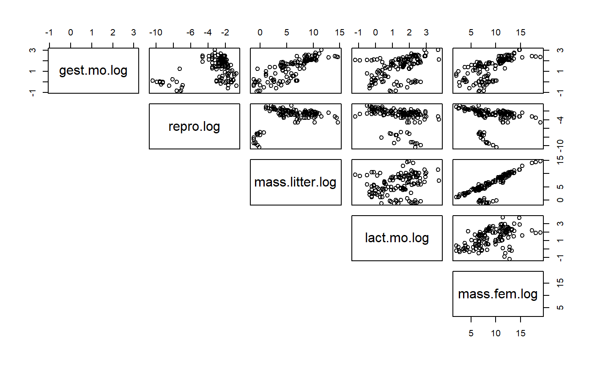
Similar functionality can be done in ggplot using GGally::ggpairs()
Run the PCA with princomp()
#principal compoents
pca.x.vars <- princomp(~ gest.mo.log+
repro.log+
mass.litter.log+
lact.mo.log+
mass.fem.log,
data = milk)A biplot takes some time to learn how to read, a skill that is beyond this tutorial. It is easy to see unique underlying structures pop out in biplots. The group of points away from the main band will be shown below to be Australian mammals (marsupials etc)
biplot(pca.x.vars)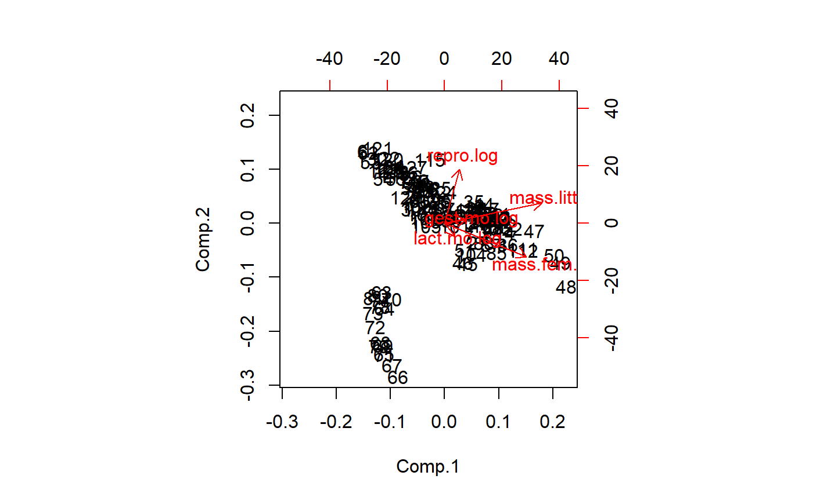
Plot w/o point by setting first color to 0
biplot(pca.x.vars,col = c(0,2))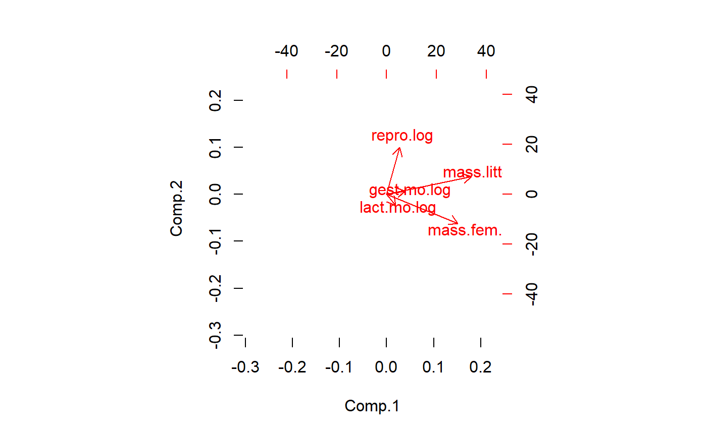
The biplot tells us that a major axis of variation is female mass and lactation duration. These two variables are highly correlated. A 2nd major axis of variation is reproductive output, which is at a right angle to female mass/lactation. This implies that after accounting for female mass, there is additional, independent variation in the data due to reproduction. Litter size and gestation duration are at about a 45 degree angle between female maass reproduction. This implies another dimension of variation that is partially correlated with both of the other two.
PCA generates as many latent variables as there are original variables. Usually only the first few are useful. This codes displays the 2nd vs. the 3rd PCs
biplot(pca.x.vars,
choices = c(2,3),
col = c(0,2))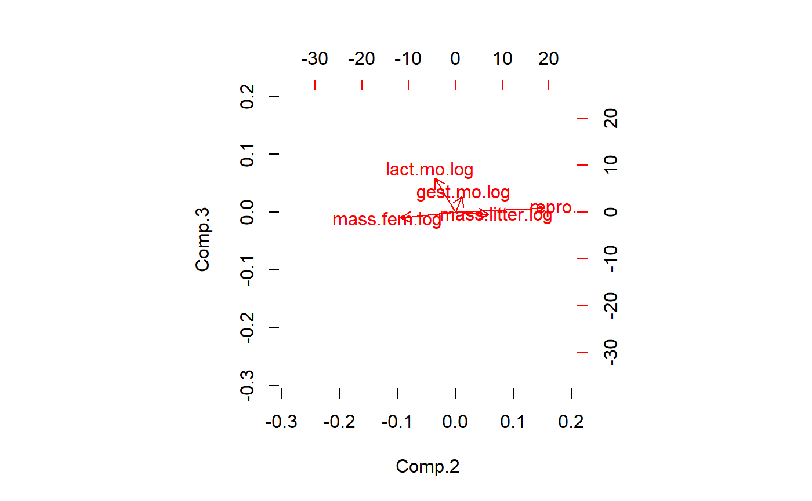
What a biplot is plotting are “PCA” scores. We can plot these by hand by extracting them from the list embedded in the PCA output object. I’ll use qplot() from ggplot to plot this
qplot(y = pca.x.vars$scores[ ,"Comp.2"] ,
x = pca.x.vars$scores[ ,"Comp.1"] )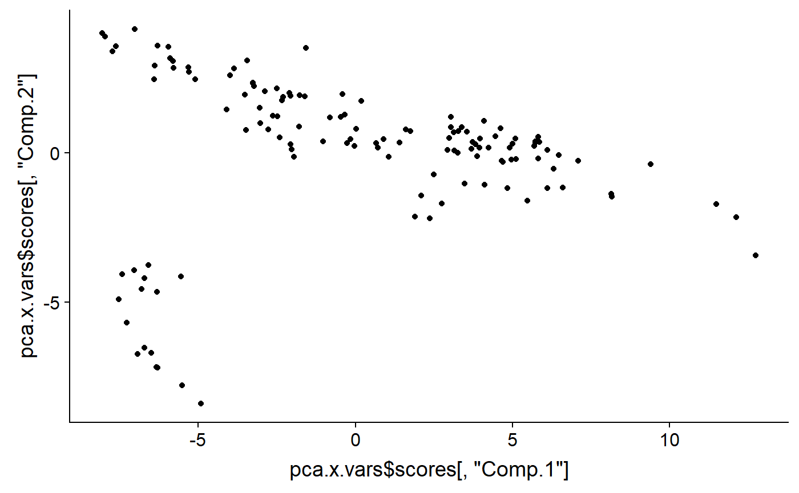
And add color code them to identify groups. It looks like that outlying group are Monotremata. Diprotodontia (marsupials), and Didelphimorphia (opossum).
qplot(y = pca.x.vars$scores[ ,"Comp.2"] ,
x = pca.x.vars$scores[ ,"Comp.1"] ,
color = milk$ord)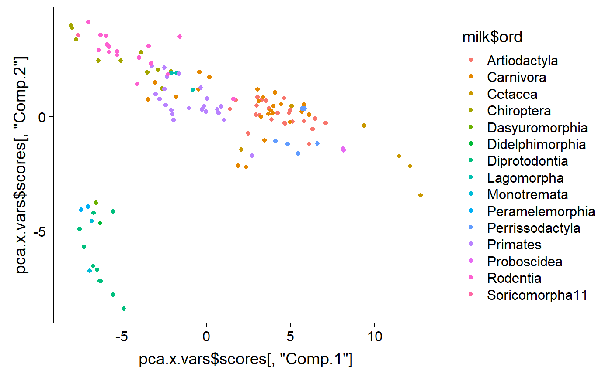
I can add labels to confirm
labs <- gsub("ontia","",milk$ord)
labs <- gsub("ata","",milk$ord)
qplot(y = pca.x.vars$scores[ ,"Comp.2"] ,
x = pca.x.vars$scores[ ,"Comp.1"] ,
color = milk$ord) +
annotate(geom = "text",
y = pca.x.vars$scores[ ,"Comp.2"] ,
x = pca.x.vars$scores[ ,"Comp.1"] ,
label = labs)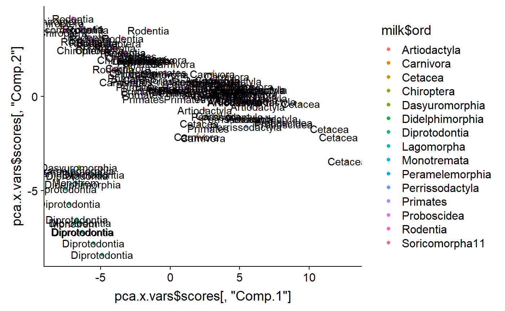
Make new variable for outliers
i.weirdos <- which(milk$ord %in% c("Monotremata" #monotremes
,"Diprotodontia" #marsupials
,"Didelphimorphia"#opossums
,"Dasyuromorphia"#tasmanian devil)
,"Peramelemorphia" #bandicoots
))
milk$Australia <- "other"
milk$Australia[i.weirdos] <- "Australia"
qplot(y = pca.x.vars$scores[ ,"Comp.2"] ,
x = pca.x.vars$scores[ ,"Comp.1"] ,
color = milk$Australia) 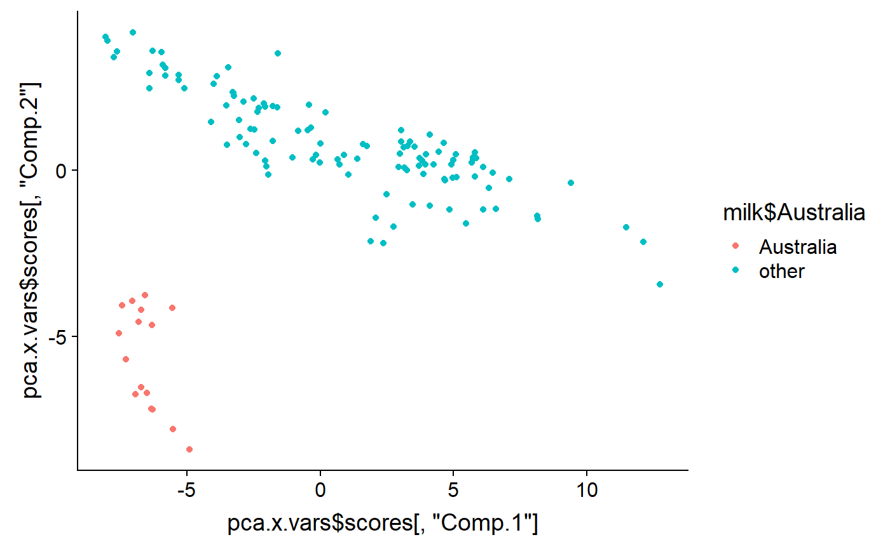
As noted above, PCA generates as many latent variables as there are original variables. Usually only the first few are useful. This codes displays the 2nd vs. the 3rd PCs
qplot(y = pca.x.vars$scores[ ,"Comp.3"] ,
x = pca.x.vars$scores[ ,"Comp.2"] ,
color = milk$Australia) 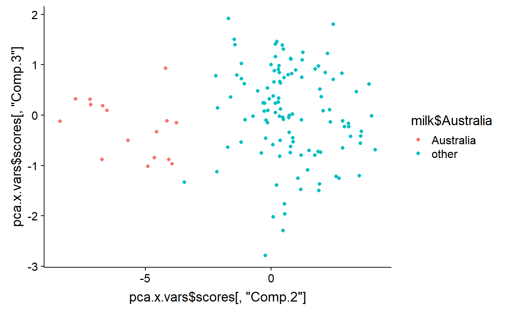
And the 1st vs. the 3rd
qplot(y = pca.x.vars$scores[ ,"Comp.3"] ,
x = pca.x.vars$scores[ ,"Comp.1"] ,
color = milk$Australia) 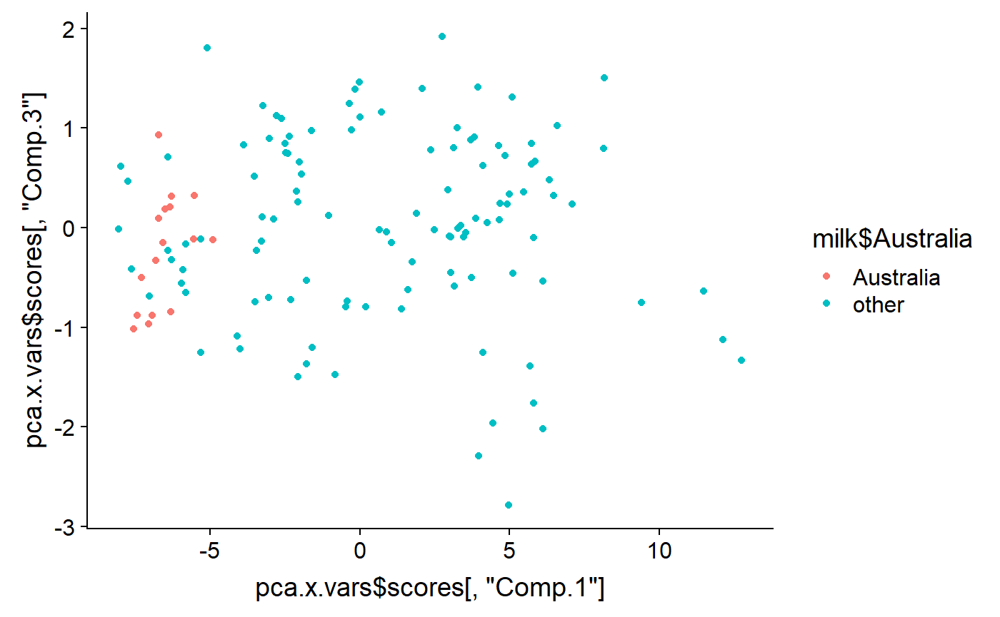
This turns out to be an ugly biplot but I’ll do it anyway.
For each mammal species the authors found data on 5 different aspects of their milk
These things are frequently correlated. We can see this in a “pairs” plot
pairs(milk[,c("fat","prot",
"sugar","energy")],
lower.panel = NULL)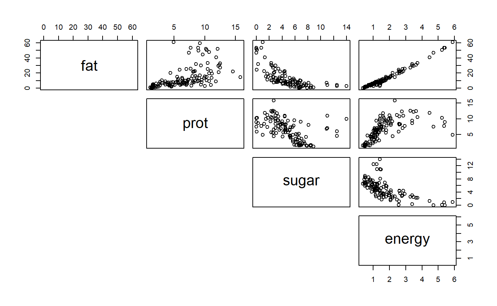
You can see that the percentage data (fat, protein, sugar) are negatively correlated b/c if a high fat percent must have a low fat percent, etc. These different columns of data therefore do not have independent information. PCA allows us to combine them to look for overal axes of variation.
milk.noNA <- na.omit(milk)
pca.y.vars <- princomp(~ fat + prot +
sugar + energy ,
data = milk.noNA)biplot(pca.y.vars,
cex = 0.9,
main = "Milk y vars")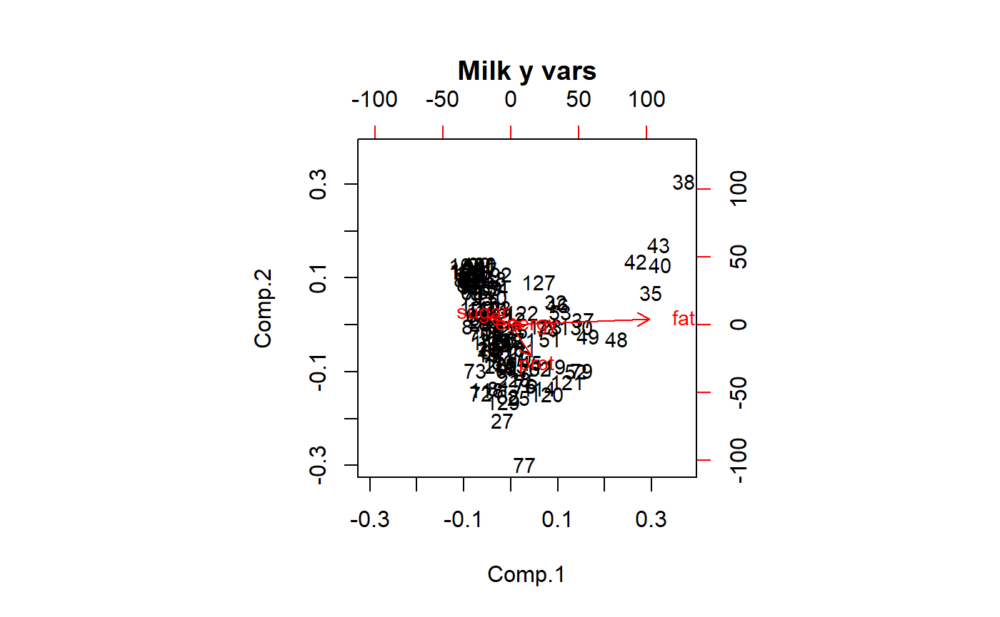
Make into dataframe
df <- data.frame(Comp.3 = pca.y.vars$scores[ ,"Comp.3"] ,
Comp.2 = pca.y.vars$scores[ ,"Comp.2"] ,
Comp.1 = pca.y.vars$scores[ ,"Comp.1"],
milk.noNA)Are the outliers Australian?
qplot(y = Comp.2 ,
x = Comp.1,
color = Australia,
data = df)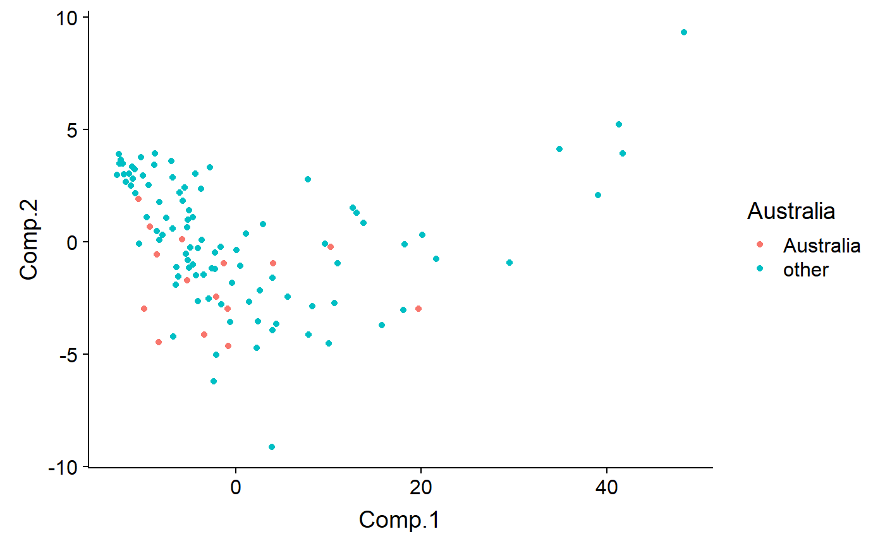
Code by biome - outliers are Aqutic
qplot(y = Comp.2 ,
x = Comp.1,
color = biome,
data = df) 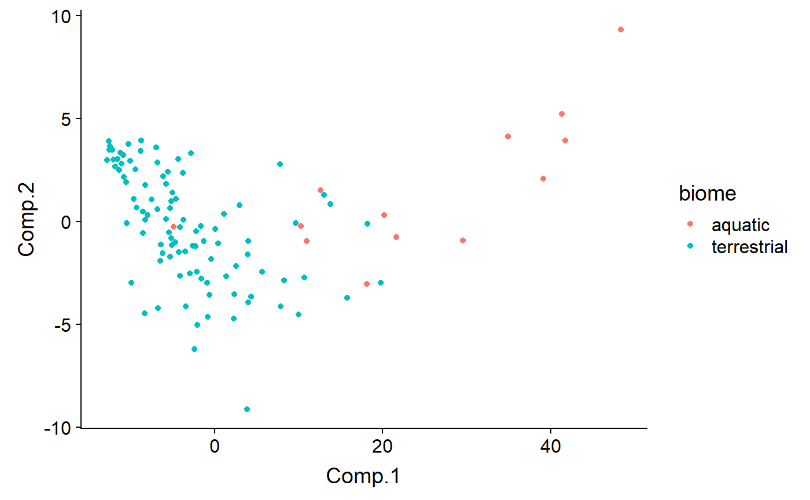
Code by biome and diet - most (all?) aquatic organismsin the dataset are also carnivores, because most aquatic mammals are carnivores (exceptions? Manatees and …)
qplot(y = Comp.2 ,
x = Comp.1,
color = biome,
shape = diet,
data = df) 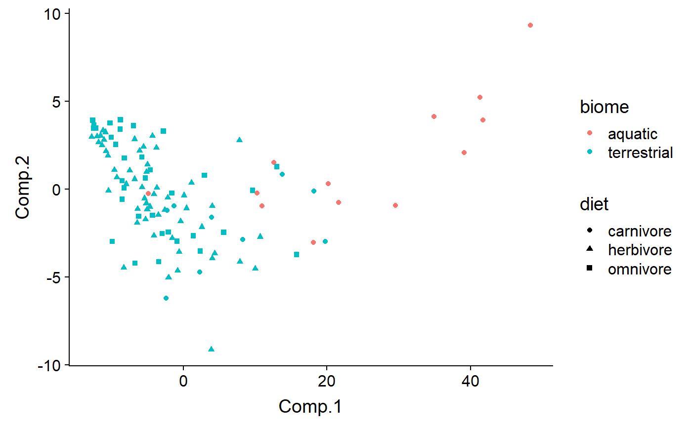
Facet by diet
qplot(y = Comp.1 ,
x = Comp.3,
color = biome,
shape = diet,
#size = log(mass.fem),
data = df,
facets = Australia ~ diet) 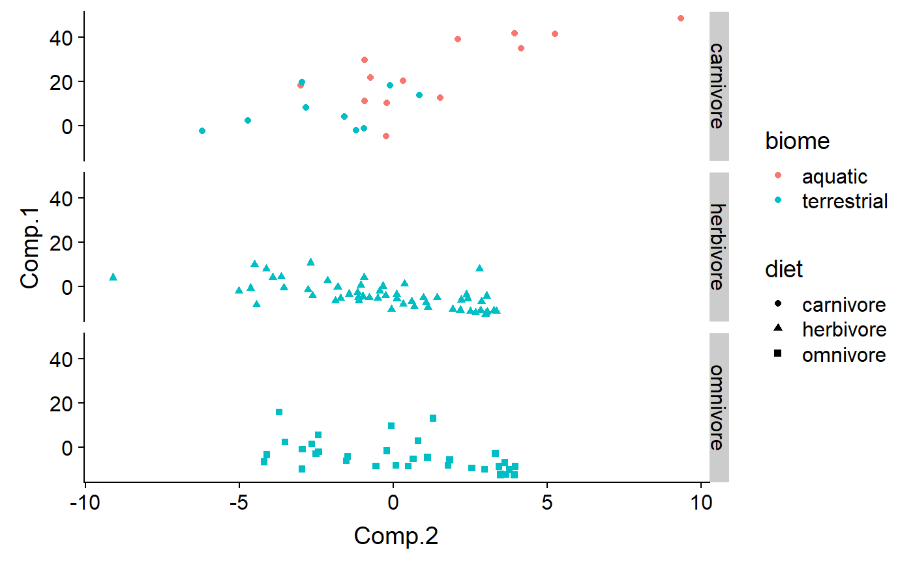